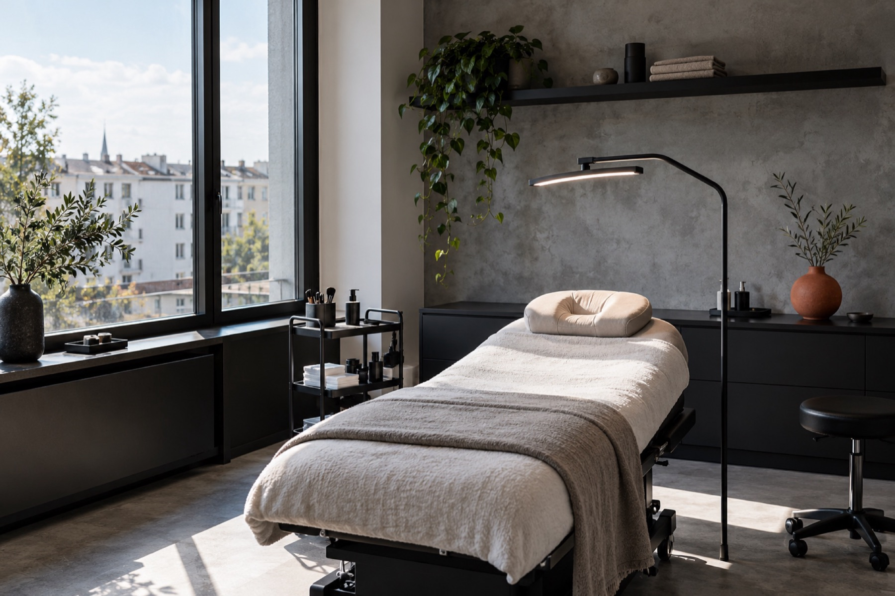
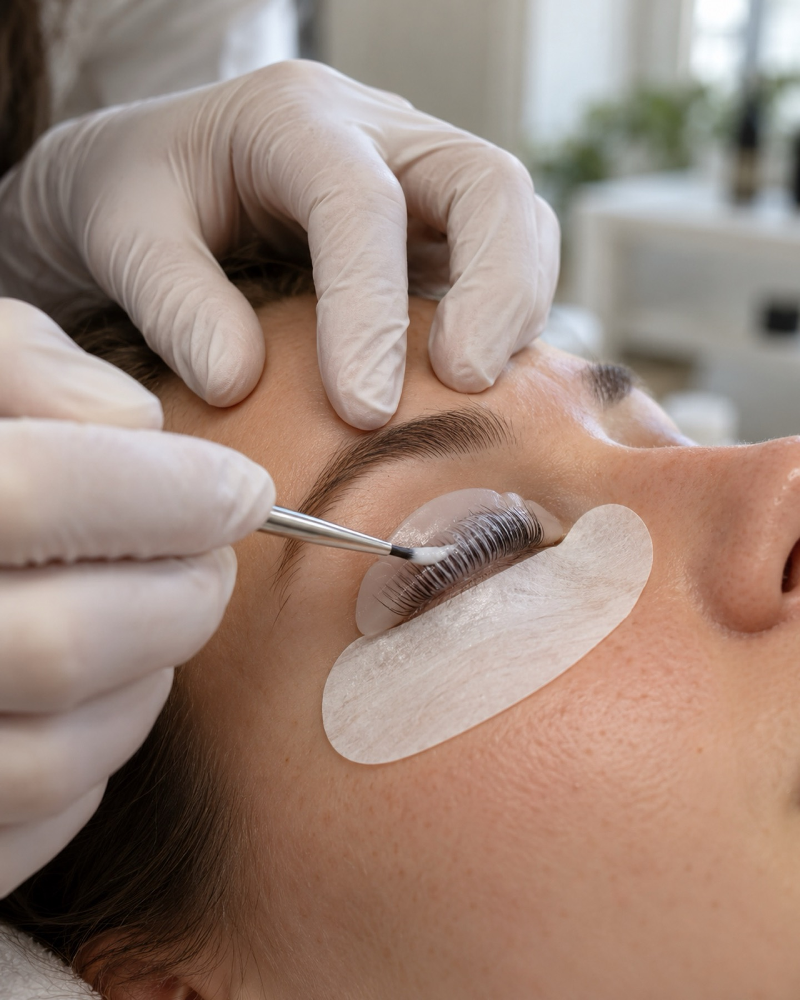
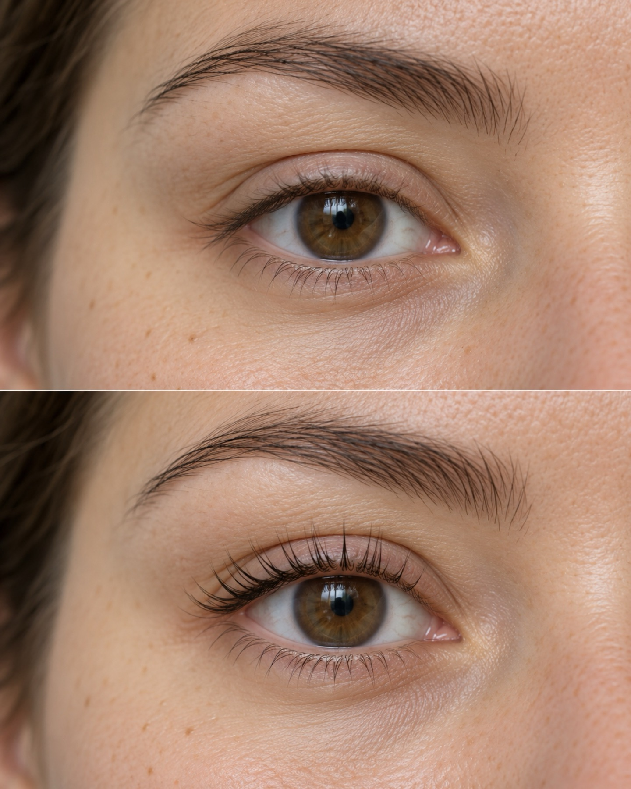
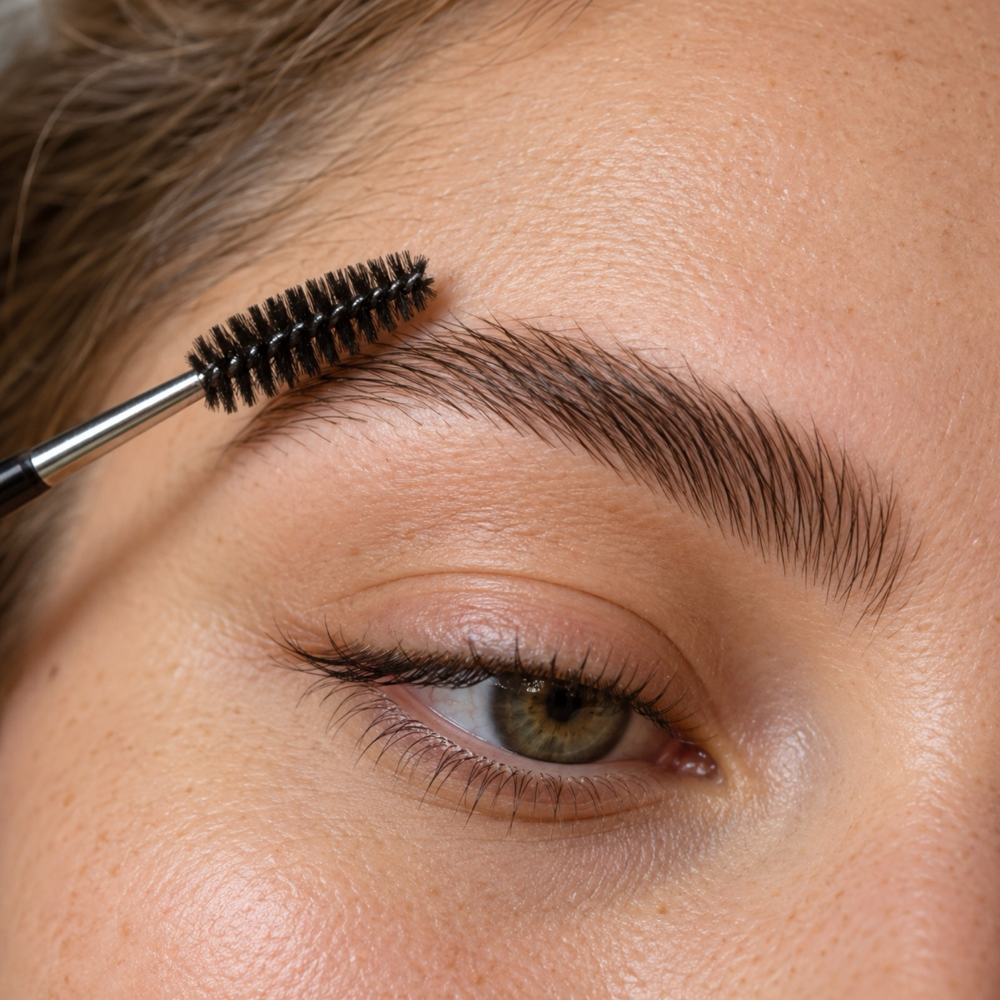
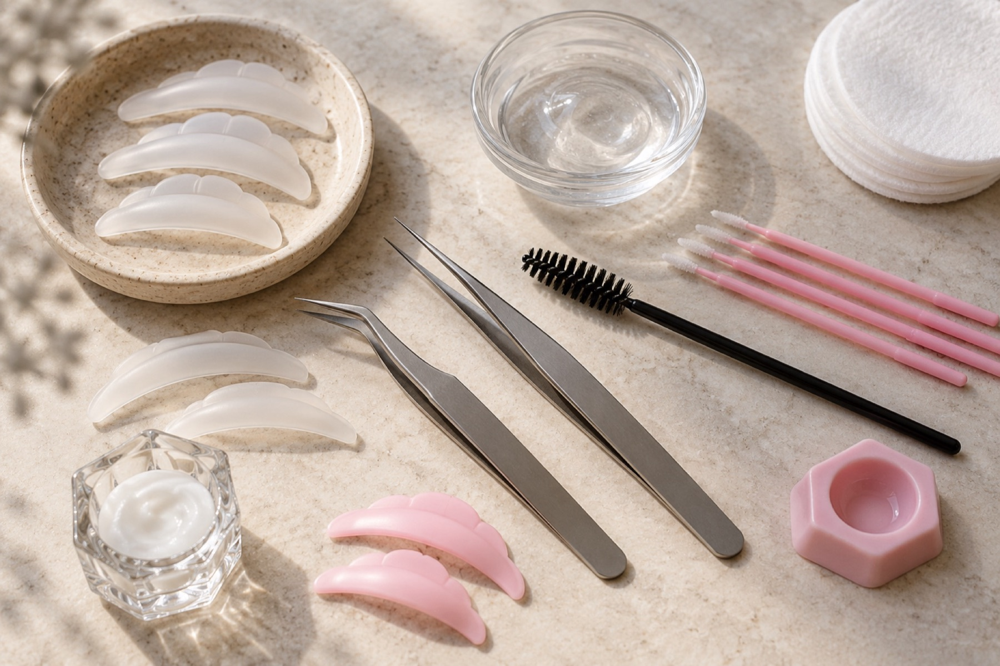
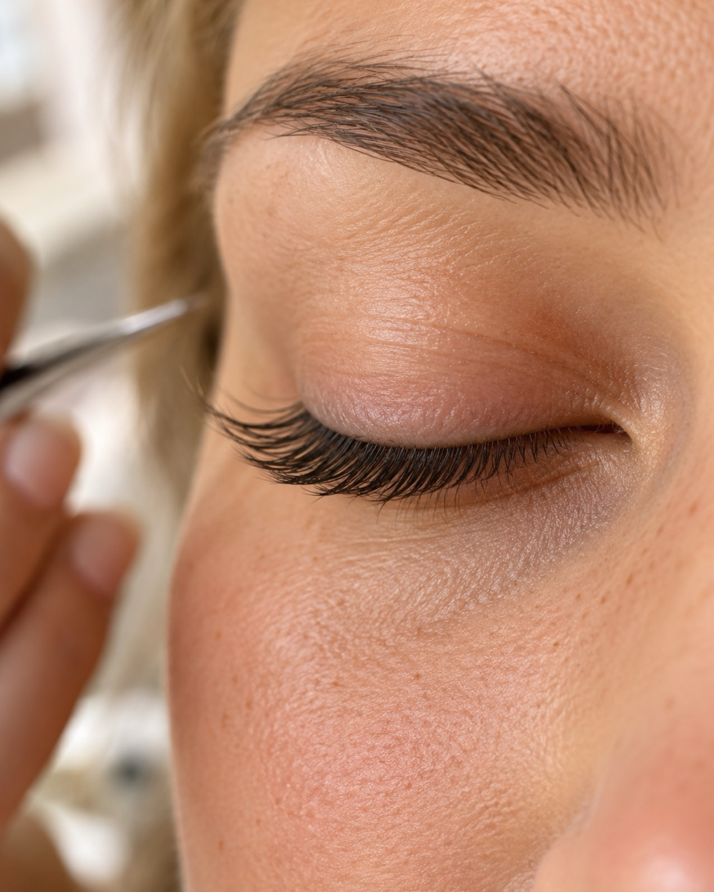
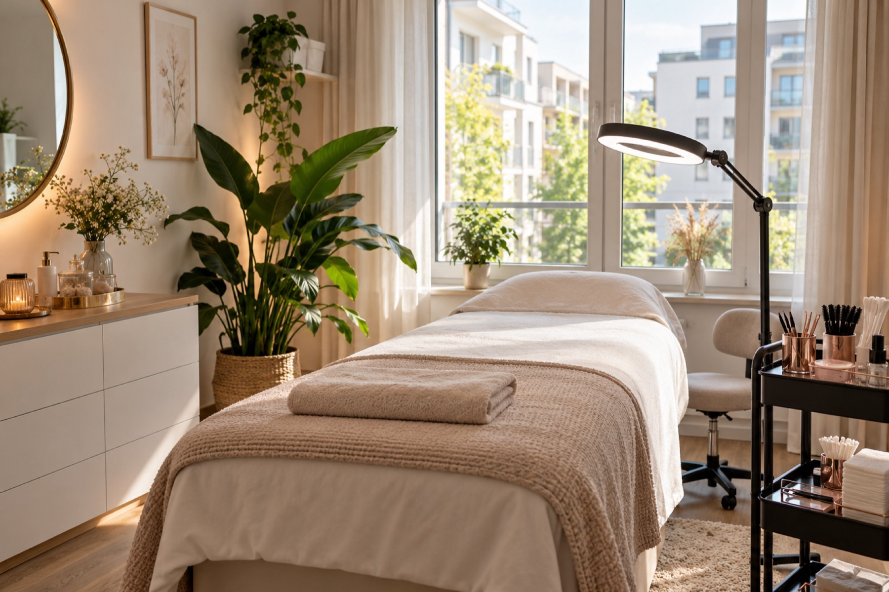

Ostfildern · Scharnhauser Park
Schärfer. Klarer. Sie.
Wimpern- und Brauenstudio im Scharnhauser Park. Lifting, das nach Ihnen aussieht und nicht nach Aufwand.
Termin anfragen
Leistungen
-
01Korean Lash Lifting

Beim Korean Lash Lifting werden Ihre eigenen Wimpern an der Wurzel angehoben und in Form gebracht. Der Blick wirkt offener, die Wimpernzange bleibt liegen.
Das Ergebnis hält etwa 8 bis 10 Wochen.
-
02Wimpernlifting

Das klassische Wimpernlifting bringt Ihre Naturwimpern in einen klaren Schwung. Sie wirken länger und dichter. Mascara brauchen Sie dafür nicht.
-
03Browlifting / Brow Lamination

Bei der Brow Lamination werden die Brauenhaare in die gewünschte Richtung gelegt und fixiert. Die Brauen wirken voller und gepflegter und bleiben in Form.
Warum wir
Handarbeit
Jede Behandlung richtet sich nach Ihren Augen. Schema F gibt es hier nicht.
Hochwertige Produkte
Diana arbeitet mit Produkten, denen sie selbst vertraut. Das schont Ihre Wimpern und Brauen.
Ruhe
Kein Zeitdruck, keine Hektik. Diana nimmt sich die Zeit, die die Behandlung braucht.
Kurze Wege
Das Studio liegt im Scharnhauser Park, In den Holzwiesen 51. Wer in der Nähe wohnt, ist schnell da.

Ergebnisse


Über Diana
Hinter Blossom Beauty steht Diana. Im Studio im Scharnhauser Park nimmt sie sich Zeit für jede Kundin und jeden Kunden.
Sie legt Wert auf hochwertige Produkte und auf Behandlungen, die zu Ihnen passen. Wimpern und Brauen sind bei ihr Handarbeit. Ohne Eile.
Ablauf Ihres Termins
-
1
Beratung
Sie sagen, was Sie sich wünschen. Gemeinsam wählen wir die passende Behandlung.
-
2
Behandlung
Sie liegen, Diana arbeitet. Schritt für Schritt, mit ruhiger Hand.
-
3
Nachpflege-Tipps
Diana sagt Ihnen, worauf es in den ersten Tagen ankommt, damit das Ergebnis hält.
Bewertungen
4,9 · 13 Google-Bewertungen
Hier erscheinen eure Google-Bewertungen.
Bewertungen auf Google ansehenHäufige Fragen
Wie bereite ich mich auf den Termin vor?
Kommen Sie bitte ungeschminkt an den Augen und ohne Kontaktlinsen. Wenn Sie Wimpernserum oder fettige Augenpflege verwenden, lassen Sie diese 24 Stunden vorher weg.
Wie lange dauert eine Behandlung?
Das hängt von der Behandlung ab. Planen Sie für ein Lifting ungefähr eine bis anderthalb Stunden ein. Bei der Terminvereinbarung nennen wir Ihnen die genaue Dauer.
Was muss ich nach der Behandlung beachten?
In den ersten 24 Stunden sollten Wimpern und Brauen trocken bleiben, ohne Wasser, Dampf oder Make-up. Danach können Sie wie gewohnt weitermachen. Alle Details bekommen Sie im Termin.
Was gilt bei einer Terminabsage?
Bitte sagen Sie Ihren Termin so früh wie möglich ab, am besten per Anruf oder Instagram-Nachricht. So kann Ihr Platz an jemand anderen gehen.
Kontakt
Blossom Beauty by DianaIn den Holzwiesen 51
73760 Ostfildern-Scharnhauser Park
+49 176 23907434
Anrufen oder per WhatsApp schreiben
Direktnachricht: @blossombeautybydiana